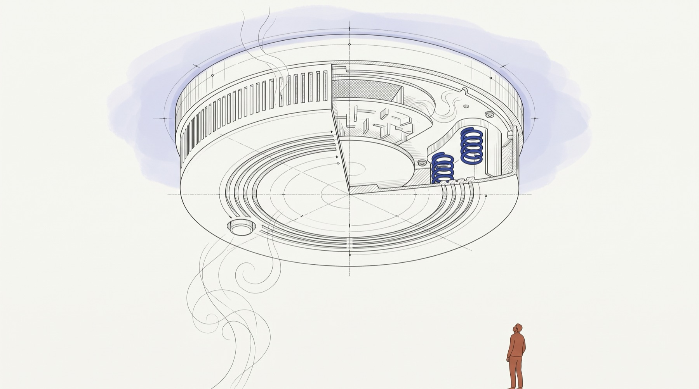

Quality & Hardening
All 8 beta conditions are met. Every one of the 109 capabilities that produce a fairness number has passed both checks below. Where an established library computes the same number, vfairness gives the same answer. Where the data cannot support a number, it says so instead of inventing one. What is still open is listed below, plainly.
Where the line is
vfairness is beta-ready when all 8 conditions below are met. Not most of them: all of them. Together they say that every number the library returns has been checked by a program, against an established library or against data where the number cannot exist, that nothing known is broken, and that every piece of code has been run at least once. Today 8 of 8 are met.
| Met | 1,580 / 1,580 run | Every code unit examined 1580 of 1580 executed and recorded |
| Met | 1,580 / 1,580 published | Each unit's state published where it is documented 1580 of 1580 carry a published state |
| Met | 0 open | No open defect in code that returns a fairness number 0 open (0 measuring, 0 unclassified) |
| Met | 0 of 59 open | Every finding of the second audit closed 0 open of 59 recorded claims |
| Met | 0 open | Every open defect ranked by severity every known defect carries a severity |
| Met | 215 / 215 clear | All 215 capabilities examined, none open every registered capability graded; none open, none unproven |
| Met | 34 / 34 match | Same answer as established libraries 34 of 34 agree; 76 have no outside reference |
| Met | 109 / 109 honest | No invented numbers on broken data 109 of 109 measuring capabilities pass; 0 fabricate, 0 over-refuse, 0 not covered |
Not required for beta, required for the 1.0 release
A second, independent examiner for every one of the code units, not only for the ones that return numbers. Decided on 1 Oct 2026: for every capability that returns a fairness number, the last two beta conditions already re-check it by running it, which is stronger than a second opinion. For the rest (rendering, tooling, plumbing) a second examiner is still owed, and it is listed here and in the heat map until it is done.
| Met | 1580 of 1580 | Every code unit carries a grade |
| Open | 972 / 1,580 confirmed | Every grade confirmed by a second, independent examiner |
What you can rely on
Guaranteed
A test fails the moment this stops being true.
- Same answer as the reference libraries. 34 metrics are computed side by side with an established library on clean data, two groups and three groups of unequal size, and must match to the ninth decimal.
- No invented numbers. All 109 measuring capabilities are fed eight kinds of broken data. Each must refuse, or say it could not measure, and must still measure the healthy data alongside.
- only one group
- no rows at all
- every score missing
- one outcome only
- every score identical
- two rows
- a group of one row
- a group with no positive outcomes
- Three answers, never two. A result is measured, failed, or could-not-check, and the third is written into the result itself, not only into a warning that most programs never show.
Tested
Checked by vfairness's own tests, not against an outside reference.
- 76 capabilities have no outside reference (LLM and agent analysis, LLM benchmarks, agent and multi-agent tracking, causal analysis, explainers and others). No other library computes these numbers, so their accuracy on normal data rests on vfairness's own tests. They are still checked never to invent a number.
- 16,275 automated tests run on every change, reaching 81% of lines and branches. Covered code can still be wrong; this says it was exercised.
Open
Not done yet, or not proven yet.
- 608 of 1,580 examined code units have not had a second, independent check, and 291 of the 872 re-checked so far were overturned. Treat those grades as evidence, not proof.
- Not yet published. Version 0.1.0 has never been released to PyPI; the release pipeline is built and gated but has not run.
- Some checks have not produced a result yet: code scanning (CodeQL, OpenSSF Scorecard) waits for the public repository, and mutation testing covers one module.
Where each part of the library stands
As of 1 Oct 2026. The last two columns were run on 1 Oct 2026. The first three come from the examination record, whose newest evidence is dated 1 Oct 2026.
The same facts, by area. Green is done, amber is partly done, red is not started or broken, grey means the condition does not apply there.
| Area | Code units examined | Re-checked by a second examiner | Open defects | Same answer as an established library | No invented numbers on broken data |
|---|---|---|---|---|---|
| Fairness metrics | 247 / 247 | 173 / 247 | 0 | 30 / 30 | 57 / 57 |
| Post-processing mitigation | 191 / 191 | 136 / 191 | 0 | 4 / 4 | 13 / 13 |
| In-processing mitigation | 175 / 175 | 131 / 175 | 0 | no reference | no measuring capability |
| LLM fairness testing | 151 / 151 | 91 / 151 | 0 | no reference | 11 / 11 |
| Operations (other) | 130 / 130 | 46 / 130 | 0 | no reference | 1 / 1 |
| Preprocessing mitigation | 103 / 103 | 67 / 103 | 0 | no reference | no measuring capability |
| Explainability (XAI) | 82 / 82 | 28 / 82 | 0 | no reference | 10 / 10 |
| Reporting | 79 / 79 | 61 / 79 | 0 | no reference | no measuring capability |
| CI/CD gates | 77 / 77 | 45 / 77 | 0 | no reference | no measuring capability |
| Bias detection | 65 / 65 | 44 / 65 | 0 | no reference | no measuring capability |
| Monitoring | 65 / 65 | 54 / 65 | 0 | no reference | no measuring capability |
| Agent fairness testing | 61 / 61 | 40 / 61 | 0 | no reference | 12 / 12 |
| Report rendering | 57 / 57 | 18 / 57 | 0 | no reference | no measuring capability |
| Top level | 45 / 45 | 25 / 45 | 0 | no reference | no measuring capability |
| MCP tools | 23 / 23 | 9 / 23 | 0 | no reference | no measuring capability |
| Validity axis | 11 / 11 | 0 / 11 | 0 | no reference | no measuring capability |
| Networking | 9 / 9 | 0 / 9 | 0 | no reference | no measuring capability |
| Vision | 6 / 6 | 4 / 6 | 0 | no reference | 4 / 4 |
| Legal | 3 / 3 | 0 / 3 | 0 | no reference | no measuring capability |
Why a green first column and an amber second column are not a contradiction
- Examined (first column): every code unit was run, on normal and on broken data, by one examiner, who graded it.
- Re-checked (second column): a second, independent examiner then tries to prove that grade wrong. Amber or red means this has not happened yet for part of the area. It does not mean the re-check failed.
- Why the re-check matters: of the 872 grades re-checked so far, 291 were overturned, about one in 3. The first examiner had sometimes missed a real defect. Every defect a re-check uncovered was fixed: none is open today.
- What protects you in the meantime: every capability that returns a fairness number is re-verified by a program on every build: same answer as an established library where one exists, and no invented number on broken data. That is a stronger check than a second opinion, and it is what the beta relies on.
- What comes next: re-checking the remaining 608 code units is the main work for the 1.0 release. Any grade a re-check overturns is fixed the same way as before.
How to read this table
| Column | What it checks | What the number means | If it is amber or red, the risk for you | What to do |
|---|---|---|---|---|
| Code units examined | Every public function, class and method in the area was run, on normal data and on broken data, and the result was written down. | Examined out of all code units in the area. | A unit nobody has run could give a wrong or made-up answer and no one would know. | Avoid the unexamined units for decisions; the status page lists them by name. |
| Re-checked by a second examiner | A second, independent reviewer tried to prove the first grade wrong. | Grades re-checked and upheld, out of all examined units. The rest are not yet re-checked; that is different from failing a re-check. | A grade not yet re-checked is one examiner's judgement, and first grades were overturned about one time in three when re-checked, so an amber or red area may still hold problems nobody has found. | For decisions with consequences, prefer green areas, or verify the result on your own data. |
| Open defects | Problems proved by running the code that are not fixed yet. | The count of them. Zero is green. | Red means there is a known way this area gives a wrong answer today. | Read the open register in the full record before using that area. |
| Same answer as an established library | The number is computed by vfairness and by fairlearn, scikit-learn, statsmodels or scipy on the same clean data. | Capabilities that match, out of those that can be compared. No reference means no other library computes it. | Red: the number differs from the reference and may be wrong. Grey: its correctness rests on vfairness's own tests only. | For grey areas, sanity-check results against what you expect from your data. |
| No invented numbers on broken data | Each measuring capability is fed data where its number cannot exist (one group, no rows, missing scores, a group too small) and must refuse. | Capabilities that refused correctly, out of those that measure. | Red: the area can report something like 0.0 ("no bias") when nothing was measured, which looks like a clean result and is not one. | Never act on a result from a red cell without checking your group sizes and missing values first. |
Colours: green done, amber partly done, red not done or broken, grey does not apply. Hover a cell for what is missing there.
How the gate works
1. Correct on normal data
Where an established library computes the same number, both are run on the same clean data and must agree. A deliberately wrong answer is fed through the same comparison to prove it would be caught.
2. Honest on broken data
Every capability that measures is given data in which its number cannot exist. Whether it should refuse is worked out by counting the data, not decided by hand, and a function that refuses real data fails too.
Re-run, not remembered
Both checks are programs that run on every documentation build and in the test suite. Each was tested by breaking the code on purpose and confirming the check turned red.
Compared with established libraries
Each capability was computed by vfairness and by the library named, on two clean datasets, and the two answers compared to the ninth decimal.
Every comparison, capability by capability
| Capability | Compared with | Result |
|---|---|---|
| demographic parity difference | fairlearn | Matches |
| demographic parity ratio | fairlearn | Matches |
| disparate impact ratio | fairlearn min/max selection rate | Matches |
| equal opportunity difference | fairlearn | Matches |
| equalized odds difference | fairlearn | Matches |
| fpr parity difference | fairlearn | Matches |
| fnr parity difference | fairlearn | Matches |
| accuracy parity difference | fairlearn MetricFrame + sklearn | Matches |
| predictive parity difference | fairlearn MetricFrame + sklearn | Matches |
| negative predictive value difference | fairlearn MetricFrame, NPV from counts | Matches |
| worst group accuracy | fairlearn MetricFrame group_min | Matches |
| auroc parity | fairlearn MetricFrame + sklearn | Matches |
| mae parity difference | fairlearn MetricFrame + sklearn | Matches |
| rmse parity difference | fairlearn MetricFrame + sklearn | Matches |
| r2 parity difference | fairlearn MetricFrame + sklearn | Matches |
| mean prediction difference | fairlearn mean_prediction | Matches |
| demographic parity difference with ci | fairlearn, point estimate | Matches |
| disparate impact ratio with ci | fairlearn, point estimate | Matches |
| equal opportunity difference with ci | fairlearn, point estimate | Matches |
| equalized odds difference with ci | fairlearn, point estimate | Matches |
| fpr parity difference with ci | fairlearn, point estimate | Matches |
| predictive parity difference with ci | fairlearn MetricFrame, point estimate | Matches |
| negative predictive value difference with ci | fairlearn MetricFrame, point estimate | Matches |
| FairnessAnalyzer | fairlearn, three methods | Matches |
| brier score | sklearn brier_score_loss | Matches |
| calibration curve | sklearn calibration_curve | Matches |
| calibration slope | statsmodels logistic recalibration slope | Matches |
| calibration in the large | statsmodels intercept with logit offset | Matches |
| bayesian proportion ci | scipy beta posterior, uniform prior | Matches |
| bonferroni correction | statsmodels multipletests | Matches |
| benjamini hochberg correction | statsmodels multipletests | Matches |
| compute effect sizes | statsmodels Cohen's h, risk and odds ratio from counts | Matches |
| permutation test | scipy permutation_test, Monte Carlo | Matches |
| bootstrap ci | scipy bootstrap percentile, Monte Carlo | Matches |
The 76 capabilities no outside library computes
ActionBiasAnalyzer, AdversarialCollusionDetector, AnchorsExplainer, BenchmarkRunner, CausalFairnessGraph, CoTFaithfulnessAnalyzer, CompositionalityAnalyzer, CorrespondenceTester, CounterfactualTester, DecodingTrustRunner, DelegationRoutingAuditor, DiceCounterfactualExplainer, EmbeddingBiasDetector, EmergentBiasDetector, FairExplAIner, FairnessExplainer, FeatureAttributionExplainer, GroupthinkDetector, IntegratedGradientsExplainer, IntersectionalAnalyzer, KernelShapExplainer, LimeExplainer, LinearShapExplainer, NegotiationFairnessTracker, NonDeterminismAnalyzer, OutputAnalyzer, PipelineTracker, RAGBiasAnalyzer, TemporalTracker, TextFairnessAnalyzer, ToolBiasAuditor, TreeShapExplainer, attention weighted rank fairness, bias amplification, brier score decomposition, calibration disparity, classification fairness report, comprehensive fairness test, conditional adverse impact, conditional demographic disparity, conditional demographic disparity with ci, counterfactual fairness, detect protected attributes, diagnose local attribution, discover intersectional groups, expected calibration error, exposure parity difference, exposure parity ratio, fairness decomposition, generate recourse, group calibration metrics, identify privileged groups, integrated calibration index, integrated calibration index with ci, intersectional disparity analysis, judge is subject, lundberg fairness decomposition, maximum calibration error, multicalibration, multicalibration with ci, ndkl, net benefit parity, noise floor from runs, normalized discounted kl divergence, pricing disparity, pricing disparity with ci, proxy score, representation severity, residual bias, route explainer, scan fairness violations, sensitivity analysis, skew, stress test fairness, subgroup robustness audit
How it got here
Weeks of work, in five steps. The figures are as measured on each date.
Second deep audit
An audit of the whole library found 84 code problems (71 confirmed by an independent reviewer) and 124 documentation problems. Every critical and high one was fixed and pinned by a test within the week.
Release held
The first release was stopped: one bug kept coming back. When the library could not measure something it returned a harmless-looking number such as 0.0, which reads as "no bias". New detectors found about 140 more places by running the code.
Every capability examined
All 215 capabilities were run on data where nothing could be measured. 122 were proved to report a number nobody had measured, giving 157 defects to fix.
All defects fixed, and a second examiner
All 157 defects were fixed, each with a test that was broken on purpose to prove it can fail. A second, independent examiner re-checked 872 grades and overturned 291 of them, about one in three, which is why that second check matters.
The two-check gate
The gate became two programs anyone can re-run: compare with established libraries, and feed every measuring capability broken data. They found 6 more defects, all fixed the same day.
The full record
Everything above is a summary. The method, every test strand, every audit wave and the complete open register follow below, closed by default.
Full technical record: the method, every test strand, every audit wave and the complete open register
This page records how vfairness is tested and hardened before its first public release. Two kinds of work go into that.
Most of it is ordinary testing, and there is a lot of it: 10,398 tests across the metric, mitigation, LLM, XAI, monitoring, Pulse and rendering paths. They check that the library does what it says.
The rest is a hunt for one particular bug, and it is the
reason this page is long. The bug happens when the library cannot work
something out, quietly puts a harmless-looking number in its place, and
then presents that number as a result. A 0.0 that reads as
“no bias found”, when what really happened is that nothing
could be measured at all.
Both are reported here with equal weight, and so is everything still open.
What the beta covers, and what it does not
The rule is what we told you to use. If a page on this site walks you into a capability, that capability is part of what the beta promises and has to be examined before the beta calls itself ready. It is not a judgement about which parts matter most; it is a reading of what has been advertised.
The rule cuts both ways, and that is the point of writing it down. Anything we are not prepared to examine has to stop being presented as ready, which is what the second row below is for.
| Scope | Units | Checked | Fix pending | Not checked |
|---|---|---|---|---|
| Core — what the beta promises | 1,398 | 1,398 | 0 | 0 |
| Preview — documented, not certified | 182 | 84 | 8 | 90 |
In core: the assessment path itself (fairness metrics, bias detection, explainability); everything that hands you a verdict (report rendering, reporting, CI/CD gates, monitoring); every surface with a product page of its own (LLM testing, agent testing, and the pre-processing, in-processing and post-processing mitigation families); and the top-level namespace you import from.
In preview, each for a stated reason: the validity axis, which is deliberately unfinished until its reference set exists; the MCP tools, which you reach through another program rather than by writing vfairness code; the experimentation, causal and pulse operations; and the vision, networking and legal helpers, which are plumbing with no user-facing entry point. Preview means documented and usable, and not covered by the beta bar. It does not mean broken.
What it takes to ship. 498 core units are not yet clean: 0 nobody has examined and 0 carry a known open defect. That is the beta's remaining work, and it is the honest size of it. Every one of them is listed by name in the grid, filtered to core.
This boundary used to be three areas: fairness metrics, bias detection and explainability. It was drawn by functional area rather than by what reaches a reader, and two things fell through it. Report rendering draws the verdict you actually look at and is the worst-covered area in the library. CI/CD gates write a pass or a fail into a pipeline, which is the most dangerous place here for a value nobody measured. Both are advertised on the getting-started and sample-assessment pages, and neither was core.
Why hardening this library costs more than building it
A Python function has to return something. There is no natural way to say
“I do not know” where a number is expected, 0.0 is
the easiest thing to type, and it stops the program crashing. Every neutral
value this programme has removed was written by somebody trying to be
helpful.

Think of a smoke detector. Building one that beeps when you press the test button is easy. The hard part is proving it beeps when there is real smoke, and that it does not sit there silently when its battery is flat.
A fairness tool has the same shape. When it cannot measure bias and returns
0.0, that reads as “no bias found”. So:
- the failure is silent: nothing crashes, and no error appears
- the failure always points the reassuring way
- nobody reports it, because a customer told “your AI is fine” is a happy customer
That combination is why these defects survived so long. A bug that produces a wrong chart is reported in a day. A bug that produces a clean bill of health is never reported at all.
One function is one step to write and five to check
Writing a function is one step: make it work. Checking one honestly is five.
- Build the situation where it cannot measure. Often harder than the function itself, because it needs a fitted model, a report object, or a populated store.
- Run it and look at what actually comes back.
- Judge whether that answer is honest. This is the expensive step, and a machine cannot do it.
- Write a test that locks the honest behaviour in.
- Deliberately break the code to prove the test notices. A test that cannot fail looks exactly like a test that passed.
Multiplied across the public surface, that ratio is the whole of this page.
What is tested and passing. The suite runs on every pull
request and every push to main, on Python 3.11, 3.12 and
3.13.
mypy src reports Success: no issues found in 228 source
files and ruff check src tests reports All checks
passed, both run 2026-09-18 and both blocking. Coverage is
81% of lines and branches against a floor of
55%, with a separate
80% floor on the lines a pull request
adds. Eight workflows gate a pull request, among them a secret scan, a
dependency scan, the export boundary and parity against reference
libraries; six of the eight are path-filtered, so which of them fires
depends on what the change touches. The capability census is complete: all
215 registered capabilities carry a
grade, 158 proven and
57 semi-proven, and the
157 defects it found at the public entry
points are all 157 fixed.
The beta line was decided on 1 Oct 2026: all eight beta conditions. A second examiner for every code unit is a condition of the 1.0 release, not of the beta. Every figure on this board is read from scripts/release_gate.py and docs/bgl6-audit-register.json when the page loads.
The second-round audit. The fix wave was audited again, and that audit recorded 59 claims. 59 are closed and 0 are still open (100% closed, as of 2026-10-01). A claim is closed when its defect is fixed and its test has been inverted into a pin, in the same commit. Open means the test still records the defective value the unit produces today, with the measurement in its docstring, so every open row is reproducible rather than suspected.
| Batch | Subject | Recorded | Closed | Open |
|---|---|---|---|---|
f01 | refusal scoring and the explainer's root predicate | 4 | 4 | 0 |
f02 | mitigation (label massager, residual transformer, suppressor, resampler, reweighting) and the DecodingTrust runners | 12 | 12 | 0 |
f03 | the CI/CD release gate and the fairness monitor | 8 | 8 | 0 |
f04 | XAI adversarial probes, threshold analysis and calibration | 13 | 13 | 0 |
f06 | compliance mapping, the signed test log and the report canvas | 11 | 11 | 0 |
f12 | data balancing, benchmark comparison, LIME and the task worker | 11 | 11 | 0 |
| total | 59 | 59 | 0 |
Generated from docs/bgl6-audit-register.json by
scripts/bgl6_register.py, which reads the audit files
themselves: each declares which of its tests still record an open
defect, and a name that is not a test in that file is refused.
What is open, at the same weight. 618 grades have had no independent check, and 291 grades have been overturned when somebody did check, so that queue is the weakest claim on this page rather than a formality. 0 callables in the wider surface are carrying a proved defect that is not yet fixed, which is a change since 2026-09-18 and not a different way of counting. 1,336 of the 1,580 objects in the library carry no grade from the census; the wider-surface waves have reached 1,374 of them, and about the remainder this page claims nothing in either direction. Neither release bar passes: the beta gate stands at BETA READY, with 0 of its 8 criteria failing. Where it stands and what closes it are in the plan to publish.
Can I use this capability?
Everything else on this page describes what was built to harden the library. This section is the part you act on. Every public function, class and method carries one of three states, and the badge appears wherever the capability is documented: in the API reference, in its own docstring, and in the full grid at status of every capability.
Where the library stands, by scope
| Scope | Units | Checked | Fix pending | Not checked | Not independently checked |
|---|---|---|---|---|---|
| Core: what the beta promises | 1,398 | 1,398 | 0 | 0 | 485 |
| Preview: documented, not certified | 182 | 182 | 0 | 0 | 123 |
| Total | 1,580 | 1,580 | 0 | 0 | 608 |
Not independently checked counts grades one examiner reached and nobody has yet tried to refute. Of the grades that HAVE been through that second examination, 291 of 872 (33%) were overturned, so a Checked unit in that column is a claim with evidence behind it, not a settled result.
| State | All code units | Share | Core |
|---|---|---|---|
| Checked | 1,580 | % | 1,398 |
| Fix pending | 0 | % | 0 |
| Not checked | 0 | % | 0 |
| Total | 1,580 | 100% | 1,398 |
Assembled by scripts/capability_status.py from
evidence dated 2026-09-11, 2026-09-18, 2026-09-25, 2026-09-27, 2026-09-29, 2026-09-30, 2026-10-01. Core is what the beta promises: every
area this project publishes a guide or a product page for, plus the top-level
namespace. That is Agent fairness testing, Bias detection, CI/CD gates, Explainability (XAI), Fairness metrics, In-processing mitigation, LLM fairness testing, Monitoring, Post-processing mitigation, Preprocessing mitigation, Report rendering, Reporting and Top level. The rest is
preview: documented and usable, and not
covered by the beta bar.
- Checked means graded and assessed: executed on healthy input and on input where the thing it measures does not exist, and if it was found inventing a value, that was fixed. It is not a correctness certificate for the number it returns, and every row states its strength: held by a test, verified once with no test, or producing no verdict that could be fabricated at all.
- Fix pending means graded and assessed, and a defect is still open. Do not rely on it in the beta. Each row names which of three kinds it is, because they cost very different things to close: a fabrication still open, a fix an independent audit refused, or evidence too narrow to call it proven.
- Not checked means nobody has established anything either way. It is the absence of a measurement, not a failed one, and each row says why: never executed, unreachable without a hand-built fixture, called in a way that told us nothing, or executed with the evidence still unjudged.
Inside core sits the assessment path itself: fairness metrics, bias detection and explainability, 394 of the 1,580 code units. Of those, 394 have been examined and are clean, 0 carry a known open defect, and 0 have not been examined at all. Core is wider than the assessment path, and the wider figure is in what the beta covers.
Read those three numbers together. The examined figure is not a verdict on the path: it means that of the units somebody examined, none was found reporting a value it had not measured. The 0 nobody has examined are not evidence of anything in either direction, and collapsing them into the clean figure would be the exact defect this library is audited for, committed on this page about its own core. The 0 with a known open defect are counted here rather than left out: this paragraph said "none carries an open defect" until 2026-09-29, when the three figures were wired to the ledger that had been measuring them all along. Each unit says which of the three it is in the grid, and the core path can be listed on its own.
The scope is the point: the mitigation families, the LLM and agent testing surfaces and the operations tooling carry open defects of their own, and every one of them is in the grid.
Every public code unit has been executed and its result recorded. All 1,580 of them. A unit counts as examined when the capability census, a grading wave, one of the three probes or the test suite has run it, and the gate takes the union of those sources and names any unit missing from it. The evidence fails closed on the suite's own result: a run that was not green contributes nothing, because lines executed on the way to a failing assertion verified nothing.
Line coverage cannot see every kind of unit, and the gap is measured rather than assumed. A class body runs once when its module is imported, before coverage measurement begins, so no assertion can put an enumeration's lines into a coverage report. That split is measured separately, in a subprocess that starts coverage before the library is imported, and is deliberately not counted towards the execution criterion, because running a class body is not recording a result. Of the units coverage calls untouched, 132 as measured on 2026-09-25 and falling as the suite grows, 43 execute nowhere and 89 are class bodies. The split lands exactly on the class-versus-function boundary, which is what makes it credible: a class body runs on import and a function body does not.
The evidence behind each badge is checked, not taken on
trust. Every graded row names the test that supports it, and
scripts/verify_grade_attribution.py runs each named file and
looks for the unit's own lines, because a row naming a test that never
executes the unit is a claim with nothing behind it. It takes about forty
minutes, so this is a dated snapshot and the date is part of the figure.
Measured 2026-09-29: across
721 graded rows naming
108 test files it confirms
677 by line coverage, reports
39 as invisible to the measurement with
the reason stated beside each, and finds
0 rows whose named test does not
reach them. That last figure was three earlier the same
day, and it had been published as zero: all three named a real test of the
ADJACENT thing, which is why nobody noticed. They were corrected and this
run is the confirmation.
Across the whole surface, no capability remains that anybody has SEEN fabricate. Every defect that was observed handing back a value nobody measured is closed: each was reproduced at the public entry point, pinned by a test, and each cause reverted separately to prove the test can fail. What is still open is 64 evidence gaps, 25 of them fixes an independent audit declined to certify and 39 where nothing was ever seen fabricating and the tests simply do not cover enough input to call the behaviour proven. That is a weaker worry than a known lie, and it is not the same as the criterion passing.
Two thirds of this surface was in the blind state when the programme started, and saying so is the reason this section exists. A library that publishes a percentage beside a scope nobody can see is committing the defect it was audited to remove.
The hardening programme
Every kind of testing is listed here with what it checks, how much of it there is, and where it stands today including what it leaves open. They are not ordered by how interesting they are. The fabricated-measurement audit, which the rest of this page goes into at length, is one row.
| Strand | What it checks | How much | State, and what it leaves open |
|---|---|---|---|
| Behaviour and domain testing | That the code does what it says on data where the answer is known: metrics, mitigation, LLM and multi-agent paths, XAI, monitoring, Pulse and rendering. | The largest group. 508 test files hold 8,782 test function definitions, which collect as 10,398 tests once parametrisation is expanded. | Runs on every pull request and every push to main, on Python 3.11, 3.12 and 3.13. Coverage is 81% of lines and branches, so at that measurement 6,955 statements and 2,036 branches were reached by no test at all. |
| Honest refusal: the fabricated-measurement audit | Whether a call that could not measure anything says so, rather than returning a neutral number a reader takes for a clean bill. | A large group, not the whole one. 246 of the 508 test files carry it in their name, and 2,422 of the 8,782 test-function definitions carry it in theirs. Both are generated by scripts/library_kpis.py, which publishes the word list it matched on, because a figure a reader cannot reproduce is the defect this page describes. | The capability census is complete with 0 open, and the wider surface now has 0 proved defects open too. What is NOT complete: 1,374 callables graded of which 618 have had no independent check, and 1,336 objects the census never graded at all. |
| Correctness against reference implementations | Metric agreement with established libraries, plus analytic oracles on constructed data where the right answer is derivable by hand. | The cross-library parity workflow, and the parity, oracle and impossibility tests inside the suite. | The workflow runs on push and on pull request when the evaluation package or the parity test changes. Every intentional difference from a reference library is written down in DIVERGENCES.md rather than hidden. Agreement with another library is agreement, not proof that either is right. |
| Statistical properties and determinism | Property-based invariants generated by Hypothesis, the known impossibility relationships between fairness criteria, and identical output from repeated runs on the same input. | Tests inside the suite. | They run with the suite, so on every pull request and every push to main. There is no separate workflow for them, so they fail the test run rather than a gate of their own. |
| Static analysis: types, lint, format | mypy over the source tree, ruff check and ruff format --check over src and tests. |
228 source files under mypy. |
Run 2026-09-18: mypy reports Success: no issues found in 228 source files and ruff reports All checks passed. All three are blocking steps in the Quality workflow. A clean type check is not a correctness proof: it says the types line up, not that any number is right. The gate also installs only the dev,rendering,viz,monitoring,causal extras, so a type error in the optional deep-learning or plotting backends would not fail it. |
| Coverage, with a floor new code has to clear | How much of the library the suite actually executes, counting untaken branches and not only unexecuted lines. | 81% line and branch, as of 2026-09-11 at commit 8559dda. |
A run fails below 55% and that floor is only ever raised. A pull request must separately cover at least 80% of the lines it adds. Coverage is not correctness: an executed line can still be wrong, and 6,955 statements were executed by nothing. |
| Mutation testing | Whether the tests would notice a change at all, by injecting faults into the code and checking that a named test goes red. | One module, src/vfairness/_bands.py: 57 of 58 mutants killed, recorded 2026-08-10, the single survivor documented as an equivalent mutant. |
Scheduled weekly and available on demand, never on a pull request, and the step that runs it carries continue-on-error, so a surviving mutant cannot turn the run red. Nothing is known about mutation survival anywhere else in the library. |
| Security and supply chain | Bandit over the source, pip-audit against known vulnerabilities in a non-editable freeze, gitleaks over the monorepo, a scan for unsafe deserialization that resolves aliased imports, and a test asserting no network access during metric computation. | Three workflows plus tests inside the suite. | Security and the secret scan both run on every pull request and every push to main, and weekly as well. CodeQL and OpenSSF Scorecard are configured but skip themselves while the repository is private, so neither has produced a result yet. |
| The export boundary | The one script that moves code out of the private monorepo into the public repository. The control plants a token for each denylist pattern class and fails if any walks through, plants the documented allowed cases and fails if any is refused, and checks the exclude paths still exist. | One workflow and its fixtures. | Runs on every pull request and every push to main. It tests the patterns it was given: a category of leak nobody wrote a pattern for walks through it. |
| Packaging and release integrity | Apache-2.0 licensing with a NOTICE and a single-source version, an sdist allowlist, twine check and check-wheel-contents, a clean-room wheel install exercised from outside the source tree, a CycloneDX SBOM, and trusted publishing over OIDC with provenance attestations. |
The release workflow and the gates in front of it. | Built and gated, and 0.1.0 was published from the v0.1.0 tag on 2026-10-01, the first run to a publish. The TestPyPI rehearsal was removed on 2026-08-28, so no rehearsal upload stands in front of the real one and the remaining gates carry that weight. |
| Public API surface and stability | A test freezes the public surface so an accidental break fails CI; errors root at VfairnessError; every report stamps the methodology_version that produced it; the 15 sub-package taxonomy is enforced by a test. |
Pins inside the suite. | In place and running with the suite. The surface changes only after a deprecation warning, and removals are reserved for 1.0.0. A frozen surface pins the names and signatures, not the behaviour behind them. |
| Documentation truth | That documented examples still run and that the prose matches the code: snippets in docs/examples.md execute as doctests, and tests assert that specific claims made on these pages still resolve. |
Tests inside the suite. | Runs with the suite, so on every pull request and every push to main. It checks the claims somebody wrote a test for, not every sentence published, so a stale sentence nobody pinned can still survive here. |
| Performance and scale | Behaviour on large inputs. | Tests inside the suite. | Gated behind a slow marker, so a fast run skips them and a fast run being green says nothing about scale. |
Where the two file counts come from, and why one of them is a
range. 508 test files and
8,782 test function definitions are
counts, re-run on every build:
find tests -name "test_*.py" | wc -l and a grep for
def test_. The split between the two largest groups is a
sort, not a measurement, and the answer moves with the rule.
Sorting by file name, 128 files carry a campaign prefix
(audit, bgl_, surface_grade_), and
193 do if the readiness series and the explicitly
honesty-named files are counted with them. Sorting by test-function name,
2,422 of the 8,782 test-function names carry the refusal vocabulary and 246 of the 508 files carry it in their file name. The word list is published in scripts/library_kpis.py as REFUSAL_VOCABULARY and REFUSAL_FILE_VOCABULARY and the counts come from that script, not from prose. The split is by NAME and it is a heuristic, so it says which tests are ABOUT honest refusal, not which of them are good.
What blocks a change, and what does not
Fourteen workflows sit in .github/workflows/, and they do not
carry the same weight. A workflow that runs nightly is not a gate on a
merge, so the two are separated here rather than presented as one list.
Reproduce with ls .github/workflows/ and by reading the
on: block of each file.
Run on a pull request
| Workflow | What it runs | When |
|---|---|---|
vfairness-tests |
The whole suite with branch coverage on Python 3.11, 3.12 and 3.13, at a --cov-fail-under=55 floor, with VFAIRNESS_REQUIRE_BACKENDS=1 so a missing optional backend fails instead of skipping quietly |
Push to main and pull request, when anything under vfairness/ changes |
quality |
ruff check, ruff format --check and mypy src, all blocking, plus a pull-request-only diff-cover job at --fail-under=80 |
Push to main and pull request, when anything under vfairness/ changes |
security |
Bandit and pip-audit. The CodeQL job in the same file skips itself while the repository is private | Push to main, pull request, and weekly |
secret-scan |
gitleaks over the private monorepo, so a key committed on a branch that never opens a pull request is still found | Push to main, pull request, and weekly |
export-boundary |
The planted-token control on the export script, the only point at which anything private becomes public | Push to main and pull request |
cross-library-parity |
Metric agreement with reference libraries | Push and pull request, when the evaluation package or the parity test changes |
pulse-contract |
The Pulse assessment output contract | Push to main and pull request, when the Pulse or evaluation packages change |
changelog-check |
That a changelog entry accompanies the change | Pull request only, when library source changes |
None of those eight marks a step continue-on-error, checked
2026-09-18 by grepping all eight files, so each one goes red on a real
failure. Six of the eight are path-filtered, which is deliberate and is
also a limit: a change that lands outside the filtered paths does not
summon them at all.
Do not run on a pull request
| Workflow | When it runs | Why it is not a gate |
|---|---|---|
mutation |
Weekly, and on demand | Never on a pull request, and the step that runs mutmut carries continue-on-error: true, so a surviving mutant cannot turn the run red |
scorecard |
Weekly, on a push to main, and on a branch-protection change |
Never on a pull request, and the whole job is guarded by if: github.event.repository.private == false, so while the repository is private it does not run at all |
release |
On a pushed v* tag, and on demand |
It publishes rather than checks; its first publish was 0.1.0 on 2026-10-01 |
The remaining three workflows handle worker deployment,
documentation deployment and usage-map maintenance. They enforce nothing
about the library, which is why they are described here rather than
counted as gates. One of
them does carry a pull_request: trigger:
usage-map runs on a pull request and checks whether the
usage maps have gone stale, but its pull-request step emits a
::warning and never fails, so nine workflows run on a pull
request while eight can go red on one. Counted by trigger rather than by
gate, the figure is nine.
A blocking gate fails its workflow run: the job goes red and the run
goes red. That is not the same thing as a merge blocker. Checked
2026-08-28 with
gh api repos/<owner>/<repo>/branches/main/protection,
the public repository has no branch protection and no rulesets at all,
and the private development repository blocks force-pushes and deletion
but sets required_status_checks to null. So a red run does
not by itself stop a merge. The detail, and how it was checked, is in
Continuous enforcement in the record below.
What has been graded, and what has not
The audit above is the one with a census behind it, and this is that census. It counts one thing only: how much of the library has been put through the grading described further down. It is not a verdict on the other kinds of testing, all of which reach code this table calls not graded.
| Surface | In the library | Graded | Not graded |
|---|---|---|---|
| Capabilities1 | 215 | 215 | 0 |
| Functions | 475 | 98 | 377 |
| Classes | 392 | 117 | 275 |
| Methods | 691 | 7 | 684 |
| Total | 1,580 | 222 | 1,336 |
1 A capability is not a fourth kind of object. It is one dispatch key in the registry, and it names one or more of the functions, classes and methods in the rows below it. The 215 rows resolve to 222 objects, which is why the graded column totals 222 and not 215: 98 functions, 117 classes and 7 methods. The capability row is not added into the total, so nothing here is counted twice.
This table counts the census only. An object in the not-graded column can still carry a grade from the second pass further down, which grades a different set by a different method. Not graded here means the census took no measurement. It is not a synonym for broken and it is not a synonym for fine.
A function is a module-level def in a
non-private vfairness module. A class is a
class defined in one. A method is a non-underscore method,
counted at the class that defines it, so an inherited method is not counted
once per subclass. The same four definitions produce the counts on the
Getting Started page, so the two
pages reconcile. Counted
2026-09-17 across
205 modules; capability grades measured
2026-09-11, surface grades
2026-09-18. Reproduce with
python scripts/library_kpis.py.
The 215 capabilities
These are the calls that produce a fairness number or a verdict. Every one was run at its public entry, twice: once on data carrying a real difference, and once on data where the thing it measures does not exist. Each carries one of four grades.
| Grade | Count | What it establishes, and what it does not |
|---|---|---|
| BGL-A proven | 158 | It refuses honestly when nothing is measurable, it measures when something is, and a named test holds it there. This does not establish that the number is statistically accurate. It establishes that the number was not invented. |
| BGL-B semi-proven | 57 | It behaves honestly today, confirmed by running it. No test fails if that regresses, so tomorrow is not covered. |
| BGL-C unproven | 0 | No input could be built that reaches it, so its honesty is unknown either way. |
| BGL-D defect open | 0 | Proved by running it to report a value nobody measured, with no fix landed. |
| Total | 215 |
This census found 157 defects at the public entry points. All 157 are fixed and independently re-checked, and 0 are open. They are a different set from the 242 findings of the deep audit in the record below, which counted across the whole codebase rather than at the public entry points.
These 215 and the 1,374 below are two separate measurements. They use different methods and different grade sets, so adding them together would produce a number that neither method produced.
The wider surface
The census covered the capabilities. A second set of waves covers the rest of the callable surface, 1,374 items so far, under five states rather than four. The fifth state exists because the census never needed it: out here, a callable can produce no fairness number and no verdict at all, and then the defect cannot apply to it.
| State | Count | What it means |
|---|---|---|
| Proven | 936 | Refuses honestly when nothing is measurable, measures correctly when something is, and a test holds it there. |
| Semi-proven | 79 | Behaves honestly today, confirmed by running it, but no test fails when it regresses. |
| Not a measurement | 359 | Produces no fairness number and no verdict, so this defect cannot apply to it. Assigned only after running it, never from reading its name. |
| Defect open | 0 | Proved by running it to report a value nobody measured. Not yet fixed. |
| Unproven | 0 | No input could be built that reaches it. |
| Total | 1,374 |
756 of those 1,374 grades have been put to a second, independent check. 618 have not. They are reported as unaudited rather than counted as settled, and that gap is the largest single thing still open on this page. It is large because the most recent wave was also the biggest: it graded hundreds of callables in one pass, and auditing a grade costs about as much as producing it.
This is not a formality, and the number that says so is the most important one here. 291 grades have been overturned by an independent check across the whole programme, out of the 756 whose current grade has been checked plus the 236 rows that were later re-graded by a newer wave. Roughly one grade in three did not survive somebody attacking it. So a grade in the unaudited column is not "probably fine": on the measured record it has better than a one in five chance of being wrong, and the page says which column each one is in for that reason.
55 of those overturns sit on a row that still carries its audited grade today. The difference between that figure and the 291 is not a correction: it is 236 rows that a later wave re-graded, which resets them to unaudited. Both figures are published because either one alone misleads, and for eight days only the smaller one was: the campaign got more thorough and the number reporting its own fallibility fell from 124 to 35, purely because re-grading a row overwrote the record that its first grade had been wrong.
0 in this wider surface, and 0 in the capability census. The two counts should still never be read as one, because they were produced by different methods over different sets.
Zero open does not mean zero present. It means every defect these waves have PROVED by running the code has been fixed, and the pin that holds each fix has been shown to go red when the defect is put back. The 417 items caught fabricating were found in code nobody had ever run on undefined input. Nothing regressed and nothing broke: the behaviour was always there, and it has now been measured. What is not settled is the 618 unaudited grades above, and the part of the surface no wave has reached at all.
What is open
| 618 unaudited grades | The largest thing open on this page. Nobody independent has confirmed them, and on the measured record that matters: 291 grades have been overturned by an independent check so far, better than one in five of those checked. A grade nobody argued with is a claim, not a measurement, so it is named here instead of being folded into the totals. Auditing one costs about what producing it costs, which is why the queue exists rather than being an oversight. |
| 0 open defects | In the wider surface, and 0 across the 215 capabilities. The two counts were produced by different methods over different sets and must still be read apart. Zero open means every defect PROVED by running the code has been fixed and pinned; it does not mean none is present, and the unaudited row above is where the next ones are expected to come from. |
| 1,336 objects the census did not grade | Of the 1,580 in the library: 377 functions, 275 classes and 684 methods. The second pass has graded part of this remainder already; the 1,374 items above are drawn from it. Finishing the rest is the next wave. Their triage is below. |
| Modules the census could not import | Every module in the package imported during the census. A module that will not import understates the surface, because whatever it defines lands in neither column above, so this line is read live from the census rather than dropped when it is empty. It has not always been empty: until the census run of 2026-09-18 it named vfairness.mcp.server. That module was never broken and nothing about it was fixed. It refuses cleanly with an install hint when the optional mcp extra is absent, which is correct behaviour, and the census machine acquired that extra. Anyone installing vfairness without [mcp] will measure it as an import failure again, and will count 1,546 code units across 204 modules rather than the figures above. |
The 1,061 functions and methods the census did not grade sort by what they return. That sort is the shape of the work, not a verdict on any of them, and it is counted before the second pass takes any of them off the list:
| unclassified, needs a human | 386 |
| returns a number or a result | 299 |
| renders, prints or converts | 215 |
| returns nothing or text | 122 |
| no return annotation, needs a human | 39 |
| Total | 1,061 |
Nothing takes a grade from that sort. A person or an agent has to run each one on input where the thing it measures does not exist, and read what comes back. The 275 ungraded classes are not in the triage, because a class does not return a measurement, its methods do. The named limits of this page, each with its reproduction, are in the open register.
How this was checked
The fix for the defect always has the same shape: three states, never two. Every surface that reports a result can say measured, failed, or could not check, and could not check is never quietly turned into one of the other two.
Every item is run twice. Once on healthy data that carries a real difference, so a working measurement has to find it. Once on data where the thing it measures does not exist: a single group, no positive outcomes, an empty table. A confident number coming back from the second run is the defect, and that is how each one on this page was caught.
A fix is not accepted on the word of whoever wrote it. A second, independent check runs against it with the job of proving it wrong. Where the two disagree, the second one is what gets published.
A test is not trusted until the bug is deliberately put back. After each fix the original defect is reinstated in the source, the named test is confirmed to go red, the healthy-data controls are confirmed to stay green, and the source is restored byte for byte. A test that stays green with the bug back in place proves nothing at all. On this project five guards turned out to be exactly that, green while the defect they existed to catch was live, and putting the bug back is what found them.
What the independent check actually does
The step above is done by whoever made the fix, so it cannot be the last step. Every grade is then handed to a second examiner with one instruction, prove this wrong, and with permission to run anything. That examiner is told what the grade claims and told, explicitly, that an audit which confirms everything is worthless and indistinguishable from an audit that did nothing.
It attacks five things in order, and the order is the measured one: most overturns come from the third.
- Does the named test reach the unit? The test is run alone under coverage and the unit's BODY lines are read out, not its definition line, which executes on import. 26 grades in this repository named a test that never reached the code it was evidence for.
- Can the guard be reached? A guard placed below a dispatch that has already chosen a different function cannot fire, however correct it looks.
- Is there a SECOND input the test never tried? If the test covers an empty array, try one group. If it covers one group, try a group of one row. If it covers NaN, try infinity, or a threshold no data can breach. This is where most overturns come from.
- Re-break the fix. Not the bug: the FIX. If the named test stays green, the fix is not load-bearing and the grade is wrong whatever the behaviour is.
- Does the disclosure survive to a consumer? A correct
"could not check" that a
to_dict, a chart or a command-line envelope drops is still a defect, one layer up, and the producer-side test passes.
The examiner may return one of three verdicts, and the third is the reason the exercise is worth anything: confirmed, overturned, or could not check. A could not check is never recorded as a confirmation. Where it overturns, the grade published here is the second one, and the first is kept beside it.
Across 872 grades put through that check, 291 did not survive it. Every one of them was a claim made by somebody who had already run the code, written a test and sabotaged it.
The fixes that follow an overturn are themselves unaudited until somebody attacks them, and this page counts them that way. That is why the unaudited figure rises after a round of fixing rather than falling: closing a defect produces a new claim. The honest end state is not a zero, it is a number that keeps shrinking with each round, published beside the rate at which the last round was wrong.
What the checking found about itself
A page that reports only successes is not evidence of anything. These numbers say whether this method was able to disagree with itself.
| 291 grades overturned on audit | An independent check, whose instruction was to prove the grade wrong, disagreed with the first grade in better than one case in five. Where it disagreed the published grade is the second one, never the first. 55 of these sit on a row that still carries its audited grade today; the other 236 were re-graded by a later wave, which resets them to unaudited. |
| 417 items caught fabricating | Caught by running them: they reported a measurement they had not made. A fix is recorded against 445 items in these waves. The two sets overlap without matching, because some fixes landed on items that were not fabricating anything. |
| 618 grades not yet argued with | Published as unaudited rather than counted as settled. Given the overturn rate in the row above, this is the honest reading: a grade in this column has better than a one in five chance of being wrong, and the table below says which wave each one came from. |
Every wave, and how checked each one is
The totals above say how much was graded. They cannot say how evenly, and the difference matters: the two earliest waves were audited as they went and are fully checked, while the largest wave graded hundreds of callables in a single day and none of its grades has been argued with yet. A reader looking only at the merged total cannot tell those apart, so each wave is published with its own counts.
| Wave | Date | Graded | Caught fabricating | Fixed | Pin sabotaged | Audited | Overturned |
|---|---|---|---|---|---|---|---|
| The per-wave figures have not loaded. They are read from the published statistics file rather than typed here, so this row means the fetch has not completed or has failed, NOT that there were no waves. | |||||||
These rows do not sum to the totals above, on purpose. Each row counts its own wave's file, unmerged, so a callable graded by one wave and re-graded by a later one is counted in both. The totals above are the merged view, where the newest grade for each callable wins. Summing this table would double-count, and reconciling it by hand would hide which wave produced which grade, which is the one thing this table is for. “Pin sabotaged” counts rows carrying a record that the test was re-broken and shown to go red; the earliest wave predates that record being kept per row, so its figure understates what was done rather than describing it.
The clearest single case was the second wave. An entire audit pass was lost to a capacity limit. It was re-run, and 26 of the 129 grades that pass produced were overturned. That is the reason a grade nobody checked is reported as unaudited here rather than counted with the rest, and it is why the last column of that table is the column to read first.
Those two figures, 26 and 129, describe one pass inside the second wave.
They are recorded in the repository, in the note on grading()
in scripts/library_kpis.py, and not in the live statistics file
the rest of this page reads, so they stay put when the page reloads.
Tests and coverage
Coverage is measured by CI, not recomputed when these pages are built. It is published as of a date and a commit, which is stated here rather than hidden in a tooltip.
| Tests | 10,398 collected, counted locally on 2026-09-17. That is a count of tests collected, not of tests that passed. CI runs the suite on Python 3.11, 3.12 and 3.13. |
| Coverage | 81% of lines and branches, as of 2026-09-11, commit 8559dda. The run that measured it. |
| Floors | A run fails below 55%, and that floor is only ever raised. A pull request must separately cover at least 80% of the lines it adds, so new code meets the target while the whole-library figure climbs toward it. |
| Never executed | At that measurement 6,955 statements and 2,036 branches were not reached by the suite at all. |
What grading means
The word “graded” appears beside every number on this page and it carries no meaning on its own, so here is exactly what was done to each piece of code.
The defect being hunted. Sometimes the code cannot
answer. The data has one group in it. Every score is missing. There are
four relevant rows and no arrangement of them could ever reach
significance. The defect is what happens next: instead of saying
“I could not check this”, the code returns a neutral-looking
number, and that number is then graded, counted, ranked and put in a
report as though it had been measured. A 0.0 that reads as
“no association found” when the statistic was undefined. An
empty list that reads as “no proxies found” when the scan never
ran. Each of those looks like a clean bill of health and none of them is
one.
The fix is always three states, never two: measured, failed, or could not check. A caller has to be able to tell the third from the first without reading the source. The reverse counts too, and is worse: code that refuses when it genuinely could have measured something throws evidence away, and a detector that refuses everything passes every test about undefined input while finding nothing real. Both directions are checked.
Grading one piece of code, step by step
- Read how it is really called. Its callers and the existing tests are the source for a realistic fixture.
- Check the thresholds in its own signature first. Three times in this work a function looked honest when the test data was simply below a minimum group size the function itself declares. The refusal came from the fixture, not from the code.
- Run it on healthy data carrying a real, findable difference, and confirm the measurement is exact. The expected value is recomputed independently rather than copied from what the code returned, because copying the output only proves the code agrees with itself.
- Run it on data where the thing it measures does not exist. One group only. One outcome only. Every score missing. Zero rows. Every score identical. Two rows. One group with a single row. Text in an alphabet the code cannot read.
- Run it with warnings switched on. A refusal carried only in a warning is invisible to anyone who suppresses warnings, and most callers do.
- If it fabricates, fix it, then trace every caller. This is where the defect escapes: a caller comparing a not-a-number against a threshold silently gets “False”, and the fabrication reappears one layer up wearing a different shape.
- Write a test that pins the behaviour, with a control asserting real data is still measured exactly.
- Put the bug back on purpose and confirm the test fails. A test that cannot fail looks exactly like a test that passed. This step has caught more false confidence than every other step combined.
- Hand the whole claim to a second, independent reviewer whose instruction is to prove it wrong.
Step nine is not a formality. 291 grades have been overturned at that step: better than one claim in five, each made after running the code, writing a test and sabotaging it, did not survive an independent check. That is also why 618 grades that have not reached step nine are published as unaudited rather than counted with the rest.
The five states
| State | What it means |
|---|---|
| Proven | It refuses honestly when nothing is measurable, it measures correctly when something is, and a test holds it there that fails when the fix is removed. |
| Semi-proven | It behaves honestly today, confirmed by running it, but no test fails if that behaviour regresses tomorrow. |
| Unproven | No fixture could reach it. A positive statement that nothing is known, not a clean bill. |
| Defect open | Proved, by running it, to report a value nobody measured. Not yet fixed. |
| Not a measurement | It produces no fairness number and no verdict, so the defect cannot apply. A renderer, a converter, an accessor. |
“Not a measurement” is the dangerous one,
because it is the cheapest to assign and it closes the question. So it
carries a rule: it may only be given after running the code and stating
what it returns instead. Never from the name, never from the type, never
from a guess. That rule exists because the guess was wrong repeatedly:
27 of 120 such dismissals were overturned, 15 of them
to_dict methods. Counted from the grading record
docs/surface-grading-2026-09-18.json on 2026-09-18: 120 items were
first graded “not a measurement” and 27 of those grades did not
survive the independent check. A to_dict looks like plumbing.
It is the boundary where a careful three-state value is flattened for a
caller, and where “could not check” quietly becomes a
number.
A grade is not a guarantee. Proven means one specific thing: this code does not report a number it did not measure, and a test holds it to that. It does not mean the statistics are correct, that the method is the right one for your problem, or that the test covers every input. Those are different claims needing different evidence, and this library does not make them on the strength of a grade.
The plan to publish
A readiness claim without a plan behind it is an opinion, and this
project has already published one of those. Two bars are measured by
scripts/release_gate.py, which exits non-zero while anything
is open.
This gate is not the test suite, and a failing criterion is not a failing test. The suite is 10,398 tests and it passes. The gate measures something else: how much of the public surface has been adversarially audited for one specific defect, and how much of it nobody has examined yet. It fails on coverage of the audit, not on broken behaviour. Read the two separately.
Where both bars stand. The beta gate returns
BETA READY,
with 0 of its
8 criteria failing. The answer at the
top of this page lists each criterion, its number and whether it is met.
This paragraph used to end “nothing is known to be wrong”, which
stopped being true on 28 September: the second-round audit has
0 open records, every one
reproducible today, and criterion
B2b exists because the gate could not see them. Measured
2026-10-01; reproduce with
python scripts/release_gate.py. Every figure in this section is
read from that script, including the date.
How a release happens
The release pipeline has its own page: Release pipeline, with every step, who performs it, what stops a bad release, and the status of the first release.
| Beta criterion | Measured | State |
|---|---|---|
B1 Every public code unit has been EXECUTED and its result recorded | 1580 of 1580 executed and recorded | Pass |
B1b Every public code unit's examination state is PUBLISHED where it is described | 1580 of 1580 carry a published state | Pass |
B2 No open defect in code that returns a fairness number or verdict | 0 open (0 measuring, 0 unclassified) | Pass |
B2b No open defect recorded by the second-round audit | 0 open of 59 recorded claims | Pass |
B3 Every remaining open defect carries an assessed severity | 0 non-measuring open, severity unassessed | Pass |
B5 Capability census complete and clear | see G5 | Pass |
B6 Same answer as an established library, where one exists | 34 of 34 agree; 76 have no outside reference | Pass |
B7 No invented number on broken data | 109 of 109 measuring capabilities pass; 0 fabricate, 0 over-refuse, 0 not covered | Pass |
What B5 defers to. The gate prints B5's measurement as
see G5, which resolves in the gate's own console output and
nowhere on this page, because the full gate's five criteria are not tabled
here. G5 is the criterion B5 points at, and run 2026-09-18
python scripts/release_gate.py prints it as
0 open, 0 unproven: every one of the
215 registered capabilities carries a
grade, none has an open defect and none is unproven. It is the single
criterion either bar passes, and it covers the capability census only, not
the wider surface in the row above it.
The denominator depends on which optional extras are
installed. The census counts what it can import, so
vfairness.mcp.server and the twelve functions it defines are
visible to the count only when the optional mcp extra is
present. A figure quoted from this page against a different environment
will not reconcile. The denominator is a property of the measuring
environment as well as of the library, and both
scripts/library_kpis.py and the gate agree on it.
Why there are two bars. The full gate asks for every public code unit graded and no open defect anywhere. Measured, that is 904 remaining code units at 69,000 tokens of machine work each, so a release held to it is a release that never ships. A bar nobody can reach stops working as a bar. The beta bar is the smallest set of criteria under which publishing is still honest.
What a beta is allowed to be. It may ship with known defects. It may not ship with unknown ones, and it may not be quiet about the known ones. Criterion B2 decides the shape: a function returning a fairness number nobody measured can put a false clean bill in front of a user, while a renderer returning an empty chart cannot. Both are defects and only one blocks a beta. A code unit nobody has classified counts as the dangerous kind until someone says otherwise, because not having worked out what something returns is not evidence that it is harmless.
What it costs, from what was actually spent
| Approach | Machine cost per code unit |
|---|---|
| One reviewer grading, one dedicated reviewer auditing | 138,000 tokens |
| Grading, with audits batched eleven to a reviewer | 69,000 tokens |
| Audit alone, batched | 16,000 tokens |
Batching the audits cut their cost by 81 percent. Eleven audits in one reviewer produce the same verdicts as eleven reviewers, because each audit is a short self-contained check and the expensive part is start-up. That one change is the difference between this plan being affordable and not.
The strategy: stop paying review prices for machine work
A reviewer is needed to judge code, not to run it, and almost all of the measured cost was a reviewer building a fixture and calling a function nine times, which a program does for nothing. Three levers, in order of size: execute everything with a program rather than a reviewer; spend judgement only where that run raises a question; and batch every audit. The probe assigns no grades, deliberately. Its output is an observation, and turning that into “this fabricates” is judgement, because for some functions the neutral value on that input is the correct answer and refusing would destroy evidence.
| Phase | What happens | Machine cost | Closes |
|---|---|---|---|
| 0 | Execute every remaining code unit on nine input worlds | none | part of B1 |
| 1 | A program sorts the output into refused, suspect, unreachable | none | feeds 2 |
| 2 | Reviewers judge the 100 suspects, batched | 3.7M tokens | B4 |
| 3 | Fix the 86 open defects that can produce a false clean bill | 5.9M tokens | B2 |
| 4 | Rank the 9 remaining open defects by severity | 0.04M tokens | B3 |
| 5 | Hand-build fixtures for the 167 the probe could not call | 6.7M to 11.5M | rest of B1 |
Beta total: 15.6 to 20.4 million tokens. The probe has
now run, and two of these estimates were wrong in opposite directions.
The suspect count was guessed at roughly 300 from the rate at which
earlier waves found fabrication; measured, it is 100, so
phase 2 falls from 11 million to 3.7 million. Against that, the first
version of this plan assumed the probe would close criterion B1 on its
own. It does not: 167 code units could not be called without a
hand-built fixture, so the probe says nothing about them. They
are recorded as not reached, with the reason, and they count against B1
rather than being quietly dropped. That is phase 5 and it was missing
here entirely. The two roughly cancel. The reach figures come from one run
of scripts/surface_probe.py over 1,049 code units on nine input
worlds, 882 reached and 167 not, recorded in
docs/surface-probe.json and recounted from that file on
2026-09-18.
The suspect count of 79 could not be reproduced from that file.
A suspect is defined here as a code unit that, on at least one world where
the thing it measures does not exist, returned a neutral value and emitted
no warning at all. Counting exactly that over
docs/surface-probe.json on 2026-09-18 gives 100, not 79, so
some narrowing is applied that is not written down here. Until that is run
down, treat 79 as the figure phase 2 was costed on rather than as a settled
count, and note that the larger figure would make phase 2 more expensive,
not less.
What is uncertain, stated rather than hidden. The suspect rate in phase 2 was first taken from the waves so far, where 138 of 420 code units were found to be fabricating. The probe has since run and phase 2 is costed on its count instead, subject to the note above: on 2026-09-18 that count of 79 could not be reproduced from the probe's own file. The per-unit cost for probe-fed grading is still an estimate: execution was the bulk of the measured 53,000 and the probe removes it, but the first batch is what settles it.
The full record
Everything below was already on this page and none of it was removed. Some of it exists because something went wrong, and the record of that is the point. Every block here was re-read against the current measurement on 2026-09-18. Where a claim had moved since it was written, the correction is stated with its date beside the original rather than replacing it. Open any row to read it.
Status and method the guiding principle, nothing released yet, and the commands that reproduce every number here
Before its first public beta on PyPI, vfairness went through a structured
hardening program rather than a single cleanup pass: a multi-agent deep
audit of the whole codebase, a full static type-checking burndown, a
battery of correctness and honesty tests, a supply-chain and security
posture built into CI, and packaging and release-integrity checks. This
page inventories every measure. Each item carries its internal issue id
(VB-*) so it maps back to the changelog.
Honesty over optimism. The library should never silently pass, silently
drop a small group, or report a number it did not actually compute. Most
of the measures below exist to enforce that one rule. The beta exit
criteria are the five criteria scripts/release_gate.py
measures, published in
the plan to publish on this page and in
docs/RELEASE_PLAN.md. That gate stands at
BETA READY, with
0 of
8 criteria failing.
The v0.1.0 tag was pushed on 2026-10-01 and the gated
release pipeline described below carried it to PyPI.
The changelog heads its section [0.1.0] - 2026-10-01.
Re-run every number on this page yourself the commands that reproduce them, and the one figure only CI can produce
Numbers rot. Each figure below carries the date it was measured and the command that produces it, so you can re-run it rather than trust the page. The authoritative live values are in the CI run for the commit you are looking at, not in this prose. The first command below regenerates the surface table at the top of this page and the grades, tests and defects rows beside it. Coverage is the one figure it does not produce: that is measured by CI across the full dependency matrix, which is why it is published with its date and its commit instead.
python scripts/library_kpis.py
python -m pytest --collect-only -q | tail -1
python -m pytest -q
ruff check src tests && ruff format --check src tests
mypy src
python -m build --sdist && ls -lh dist/Could not check: the campaign against the fabrication class sixteen waves in August 2026, eight defects reproduced by execution, the three-state guarantee, the five guards that were green while their bug was live, and why the class is not closed library-wide
The largest single piece of hardening in the project's history. Sixteen waves over two days in August 2026, against one defect class.
Re-read 2026-09-27. These waves closed the class at the surfaces they examined, the rendering adapters and the metric paths named in this record. They did not close it library-wide. The later wider-surface waves graded 1,374 more callables and caught 417 of them reporting a value nobody measured. Those are now fixed and pinned, so this record is no longer where the open work is: it is in the 618 of those grades that no independent check has argued with, set out in the wider surface. Read this record as what was done to one part of the library, not as a verdict on all of it.
The defect
vfairness computed its fairness metrics correctly. In a large number of
places it then made a claim about those numbers that the data did not
support. The mechanism was one habit, repeated: where a value was
missing, the code substituted a default (usually 0, sometimes a
midpoint 0.5, sometimes a maximally reassuring
p = 1.0, sometimes a severity string or a boolean
False), and then graded, counted, coloured, sorted by, or
plotted that substitute as though it were a measurement.
A fabricated all-clear tells a reader a group was checked and cleared when it never was. A fabricated breach reports a violation nobody measured, which sends someone chasing a problem that does not exist and discredits the tool when they work out why.
Eight of them, each reproduced by execution before it was fixed an inverted deployment gate, a fabricated all-clear, invented confidence intervals
Each of the following was reproduced by execution before it was fixed:
- The CI/CD deployment gate was inverted for the whole ratio family. Under the four-fifths rule it approved a disparate impact of 0.00, a protected group never selected at all, and blocked perfect parity at 1.00. All four cases were wrong.
- A group dropped by the default
min_group_sizemade the metrics return 0.0 and 1.0, which reads as perfect parity, for what was the maximal violation. - SVG exports rendered “PASSED 5 / 5, FAIR RATE 100%” for a report the engine itself had marked not assessable.
- Chart adapters fabricated confidence intervals, printing value plus or minus 0.02 as a computed band on every real report.
report_card_to_svg(None)rendered “DEPLOYMENT APPROVED” from no data at all, because a demo fixture was reachable as a runtime fallback.assert_fairnesstreated a NaN metric as a pass, so a run that measured nothing satisfied a release gate.reliability_diagram_to_svgreported “Well Calibrated, ECE = 0.000” on no data.- The analyzer misstated its own row accounting, reporting
original_size105 andn_excluded0 for a run that excluded 15 of 120 rows.
What the library guarantees on these surfaces now: three states, never two
Every verdict surface these waves reached carries assessed-pass, assessed-fail and could-not-check, and could-not-check is never collapsed into either of the other two. Read this as a guarantee about those surfaces, not about the whole library. The waves that followed found 417 callables outside the reach of these ones that were still collapsing could-not-check into a number; they are fixed and pinned, and the record is in the wider surface. The list below describes what was done here rather than what holds everywhere, and the part of the library no wave has graded is still the part about which nothing is claimed.
- A row, group, metric or chart that measured nothing gets no number, no badge, no colour, no plot point, and no place in any count or headline implying it was measured.
- Verdicts are graded over the graded subset, so a partial run still produces a useful answer instead of refusing outright.
- An unqualified all-clear is never rendered while anything is ungraded.
- The ungraded count is stated on the canvas itself, in the headline band, not in a footnote.
- A default is not a measurement, a sentinel is not a measurement, and absent and zero are different claims.
The guarantee, executed a transcript from 2026-08-28
>>> report_card_to_svg(None)
'... COULD NOT CHECK: no gate decision was supplied, so nothing was
approved here ... DEPLOYMENT: NOT CHECKED ...'
>>> classification_fairness_report(y_true, y_pred, groups) # one group never selected
demographic_parity_ratio == 0.0 -> failed_metrics (not passed_metrics)
demographic_parity_ratio == 1.0 -> passed_metrics (not failed_metrics)How that was verified five checks: an exhaustive sweep, a per-row sweep, an AST scanner, sabotage, and healthy-output controls
How that was verified
The verification method is the part worth trusting, because the guarantee above is only worth what the checks behind it are worth. Five things carried it.
1. An exhaustive sweep, so coverage is a table and not a judgement
Every public *_to_svg adapter is called with the emptiest
input it accepts, and the result is read. There are 44 of them, so
“did we find them all” is answered by enumeration rather than
by recollection. The campaign's own runs recorded the number of adapters
fabricating a verdict from nothing falling 13, then 4, then
0. Re-run independently on 2026-08-28 against commit
31e182b, 40 of the 44 render an explicit could-not-check
state and none renders a canvas without one; the other 4 take a report dataclass with no defaults, so
their emptiest input is hand-built by their own named tests instead.
2. A per-row sweep, one level down
The chart-level rule does not imply the row-level rule: an adapter whose chart-level state is correct can still invent an individual row from defaults, so a green chart did not yet mean every row on it was measured. The per-row sweep constructs an input where the chart carries real data and one row reports nothing but its identifier, then reads the rendered artifact.
3. An AST scanner that counts the defect shape, not its spelling
The scan walks the parsed tree of
src/vfairness/rendering and finds every
something.get(key, <numeric or boolean literal>), the
shape that turns an absence into a measurement. Executed against two
commits on 2026-08-28 it reports 180 sites across 14 files
before the campaign and 47 across 12 files at
31e182b. Both are reproducible from the repository at those
commits, so run it rather than believing the numbers here. Re-counted
2026-09-18 at 20f49c9: 8 sites across 2
files. That re-count was checked before it was believed, by
running the same scan against 31e182b and confirming it
still returns the published 47 across 12. The count is a work item, not
a clean bill: it is how the remaining sites are found and counted.
The same principle is what the suite's own reintroduction guards were
built on. They walk the parsed tree rather than scanning for text, so a
rename, an attribute operand, a .casefold(), an
re.search() or an f-string cannot hide the defect from them.
Where a site is deliberately exempt, the exemption is
named in the test, with its reason, and keyed by the
defect rather than by the file, so it cannot silently bless a different
bug in the same file.
4. Every guard was sabotaged before it was trusted
After each fix, the exact defect is reinstated, the named test is confirmed to go red, the healthy-input controls are confirmed to stay green, and the source is restored byte-identically. In several places the sabotage is kept permanently as a positive control inside the suite, so a guard cannot quietly become inert.
5. Healthy output was protected throughout
A library that answered could-not-check for everything would pass every failure test and be useless. Every could-not-check assertion in these suites is paired with a healthy-input control asserting that a genuine all-pass run keeps its green all-pass, so a “fix” that simply suppresses verdicts everywhere fails the controls. The published example gallery is regenerated from live computation and compared against the previous build as rasterised images, not as markup, because at one commit the markup differed from the shipped gallery in 12 files and the pixels in 4. That comparison is a manual step today, not a CI check.
Five guards were green while the defect they existed to catch was live what sabotage found, and why each guard was blind
The single most useful thing this campaign found
Sabotage is what found them, and in every case the cause was the same: the guard enumerated the spelling of the bug rather than the bug.
- The direction-bug guard scanned exactly one file,
_metric_direction.py, while each recurrence of the bug appeared in a different file. - That guard was pinned to three exact spellings of the token
"ratio". When the same bug class reappeared one directory away as"disparate impact" in n, the pin stayed green while a 0.45 disparate-impact difference against a 0.10 bound rendered as a green pass. - Measured against sixteen real spellings of that one defect, the spelling-enumeration guard caught 4 and missed 12: it could not see a renamed operand, an attribute operand,
.casefold(),.find(),re.search(), the token parked in a constant, a loop over a tuple of tokens, or an f-string-wrapped operand. Rebuilt on the parsed tree it catches 16 of 16, and each of the sixteen is its own positive control. - The silent-swallow guard's exemption list was keyed by file, so reinstating the exact defect in
discovery.pyleft the guard green, because that file was already exempt for an unrelated reason. Re-keyed to(file, exception, shape), the same sabotage now fails and names the line. - A guard that greps rendered markup for a string passes on a chart where that string is painted over by another element. A summary pill drawn at the wrong coordinate covered its siblings, so a scan holding one high-risk proxy displayed a single emerald “LOW: 2” as its headline while “HIGH: 1” sat in the file the whole time. Only rasterising the image and looking at the picture finds that.
The transferable lesson: a guard is only worth its green. Assert on the drawn text, then rasterise and look. Key an exemption by the defect, not by the file. Detect the shape on the parsed tree, because a list of spellings only ever buys the spellings its author thought of.
Correctness and scientific validity eight checks: reference-library parity, an analytic oracle, property-based tests, impossibility relationships, determinism, insufficient evidence, undefined metrics, no silent swallow
The metric core is checked against ground truth from several independent directions, not just against its own past output.
The eight checks, with their issue ids reference parity, analytic oracle, property-based, impossibility, determinism, insufficient evidence, undefined metrics, no silent swallow
Reference-library parity VB-TEST-4
Metrics are cross-checked against established libraries, and every intentional difference is documented in DIVERGENCES.md rather than hidden.
Synthetic analytic oracle VB-TEST-1
Known-answer checks on constructed data where the correct fairness value is derivable by hand.
Property-based tests VB-TEST-2
Hypothesis generates adversarial inputs to probe invariants that fixed examples miss.
Impossibility relationships VB-TEST-3
Tests assert the known mathematical tensions between fairness criteria hold, and correctly vanish at perfect accuracy.
Determinism VB-TEST-5
Repeated runs on the same input produce identical output; bootstrap paths take an explicit random_state.
Insufficient-evidence honesty VB-API-4
No code path silently passes or drops a small group. Strata below the group-size gate return an explicit insufficient-evidence verdict via assessment.insufficient_evidence_groups.
Undefined metrics are not failures VB-EVAL-1
A metric that cannot be computed (returns NaN, e.g. an error-rate metric when a group has no positive labels, or R² when a group has constant y_true) is surfaced in assessment.not_assessable_metrics and excluded from the score, never reported as a fairness violation.
No silent swallow VB-SEC-4
An AST-level guard test forbids the metric core from swallowing computation errors across evaluation, in-processing, and post-processing.
The deep-audit campaign 242 findings across the whole codebase, all closed, and the fixes that came out of it
A two-workflow, multi-agent deep audit (one static, one empirical, each adversarially verified) examined the whole library and produced 242 findings. All were fixed across five waves to zero open items, and the suite grew from 831 to more than 1,280 tests in the process. It has kept growing since: the suite now collects 10,398 tests, the figure under Tests and coverage on this page. Later audit iterations run against later code and keep their own registers, some with open entries, so “zero open” describes this campaign rather than the library's whole audit history. Measured 2026-09-27 the wider surface also stands at 0 proved defects open, and what is open there instead is 618 grades no independent check has argued with, set out under What is open at the top of this page.
Representative fixes from that campaign statistics honesty, calibration, threshold optimization, falsy zero, rendering
- Statistics honesty.
fisher_exact_testuses the real Fisher exact test (no silent chi-square degrade above n=200); Bayesian group intervals report the observed rate as the point estimate; a minimum-detectable-effect is computed from the requested alpha and power. - Calibration correctness.
BetaCalibratoris real Kull et al. 2017 beta calibration rather than a renamed Platt transform; group calibrators pass unknown group ids through untouched and disclose the mismatch instead of silently zeroing them. - Threshold optimization. The optimizer that previously crashed on fit now searches thresholds jointly by coordinate descent and validates the final assignment.
- Falsy-zero bugs. A family of bugs where a legitimate
0(a zero-tolerance threshold, a fairness score of 0, an explicit0.0alert bound) was treated as absent were fixed across CI/CD, monitoring, and rendering. - Rendering robustness. Hostile inputs (empty modules,
Nonenests, stringified numbers, infinities) either render or raise a clearValueErrornaming the template, instead of leaking aZeroDivisionor overflow error.
Code-quality gates lint, format, types, the strict island, the API snapshot, mutation testing, and where each one stops
Three gates fail the workflow run on every library change:
ruff check, ruff format --check and
mypy src. A test freezes the public API surface, so an
accidental breaking change fails CI. Mutation testing covers one module and
is informational rather than blocking. Each gate's reach, and where it
stops, is below.
The six gates, and what each one does not cover lint, format, types, the strict island, the API snapshot, mutation testing
Lint gate VB-LINT-1
ruff check src tests runs on every library change and is blocking. The tree is clean under the E/F/I/N/W rule set.
Format gate VB-LINT-2
The whole src and tests tree is ruff format-clean (double quotes, space indent) and ruff format --check is blocking. The one-time reformat commit is recorded in .git-blame-ignore-revs so git blame skips it.
Type gate VB-TYPE-1
A full type-error burndown took mypy src from 500 errors to zero across 82 modules with root-cause fixes, and mypy src is now blocking on the dependency set the workflow installs (dev,rendering,viz,monitoring,causal). That set is also the gate's limit. Measured 2026-09-06, with the optional deep-learning and plotting backends additionally installed, mypy saw four more modules and reported errors in them. Re-measured 2026-09-18 with the CI-pinned mypy 2.3.0 and torch 2.13.0, matplotlib 3.10.9 and shap 0.52.0 installed, python -m mypy --no-incremental src reports Success: no issues found in 228 source files, so that error set no longer reproduces. The gap in the gate's reach is unchanged: CI still installs only dev,rendering,viz,monitoring,causal, so nothing here fails if those errors come back. See the open register. The pass also surfaced and fixed real bugs, such as a subgroup-robustness audit and a correlation-based proxy detector that were each silently dead because a value was passed in the wrong argument position. The package ships a py.typed marker (VB-API-1) so downstream projects type-check against the library's own hints.
Strict type island VB-TYPE-2
Foundational public modules and core helpers are additionally held to mypy --strict via a per-module override; the island expands outward as more modules are cleaned.
Public API-surface snapshot VB-API-3
A test freezes the public surface, so an accidental breaking change fails CI.
Mutation testing VB-TEST-9
mutmut verifies the tests actually catch injected faults. Baseline recorded 2026-08-10: 57 of 58 mutants killed on src/vfairness/_bands.py, the band-boundary module, with the single survivor documented as an equivalent mutant. The configured scope is that one small pure module, chosen so a run finishes in about a minute; the workflow can widen it on demand, and it is informational rather than blocking.
The test suite what the suite holds beyond the metric checks, and why a CI run reports a different number
The suite collects 10,398 tests, counted on
2026-09-17 with
pytest --collect-only. Beyond the correctness checks above, the
suite guards output stability, scale behavior, and the library's runtime
guarantees.
Why a CI run reports a different number optional extras, and one earlier run in full
The figure above is a local collection with the optional extras
installed. CI installs a different set again: re-read 2026-09-18,
the full-suite workflow installs
dev,rendering,viz,dashboard,monitoring,causal,xai,training,parity,cicd,
so it collects a different number, and it reports tests that passed
rather than tests that were collected. The CI run for commit
31e182b on 2026-08-28 passed 4,354 tests alongside 24
skips, 2 xfails, 1 xpass and one failure, which has since been
closed (see The Open Register). Both figures are
real and they count different things, which is why each one carries
its date, its commit and its method here.
What else the suite holds a skip is not a pass, branch coverage, executable docs, snapshots, scale, zero telemetry
- A skip is not a pass. “1,869 passed, 61 skipped” and “1,930 passed” are the same shade of green, and the reasons only print under
-rs. CI setsVFAIRNESS_REQUIRE_BACKENDS=1so a missing optional backend becomes a named failure instead of an invisible skip. That guard exists because an audit found 41 explainability and in-processing tests, including the regression pins for two findings previously rated critical, had executed in no environment at all. - Branch coverage and new-code gating VB-TEST. Coverage counts untaken branches, not just unexecuted lines. The measured figure is 81% line and branch as of 2026-09-11, against a CI floor of 55%, and the floor is only ever raised, so it acts as a ratchet. A pull-request
diff-covergate separately requires the lines a change adds to be at least 80% covered, so new code meets the target while the global figure climbs toward it. - Executable documentation VB-DOC-3. Snippets in
docs/examples.mdrun in the suite via doctest, so a documented example that breaks against the real API fails the build. - Report snapshots VB-TEST-10. Rendered reports are pinned so a change in output is deliberate, not accidental.
- Performance and scale VB-PERF-1. Large-input behavior is exercised (and gated behind a
slowmarker so a fast run can skip it). - Zero-telemetry VB-GOV-2. A test asserts no network access happens during metric computation.
- Deserialization safety. A scan asserts the absence of unsafe loaders, including aliased imports.
Security and supply chain bandit, pip-audit, CodeQL, Dependabot, the SBOM, deserialization safety, and a later defence in depth pass
Bandit and pip-audit run on pull requests and on a weekly schedule. CodeQL and OpenSSF Scorecard are configured but stay skipped while the repository is private, so neither has produced a result yet. A second pass added defence in depth with no known exploit behind it.
Scanners, supply chain, and the second security pass bandit, pip-audit, CodeQL, Dependabot, SBOM, deserialization
Static and dependency scanning VB-SEC-4/8
Bandit (source) and pip-audit (known vulnerabilities, run in strict mode against a non-editable pip freeze) run on pull requests and on a weekly schedule. A CodeQL job is wired up but stays skipped while the repository is private, because code scanning needs GitHub Advanced Security; it re-arms automatically if the repository goes public.
Supply-chain posture VB-SEC-5/7
Dependabot updates and a CycloneDX SBOM generated at release. An OpenSSF Scorecard workflow is configured but stays skipped while the repository is private.
Deserialization safety VB-SEC-6
The xai sidecar refuses to deserialize untrusted model payloads unless the caller explicitly opts in, closing a remote-code-execution vector.
A follow-up pass added, with no known exploit: the MCP
load_dataframe tool rejects remote data_path
URLs so an agent-supplied path cannot become network egress or an SSRF
fetch; the Pulse artifact download pins the scheme to https
and caps response size; the deserialization scan resolves aliased imports
and covers marshal, pandas.read_pickle,
jsonpickle, and shelve; error logs no longer
echo sensitive payloads; and CI workflows declare least-privilege
(contents: read) token scope.
Packaging and release integrity licensing, the lean source distribution, build verification, the clean-room install, trusted publishing, and the rehearsal that was removed
Apache-2.0, a lean source distribution, twine check and
check-wheel-contents on every build, a clean-room wheel
install before any publish, and trusted publishing with provenance
attestations. There is no TestPyPI rehearsal: it was removed on 2026-08-28,
so the remaining gates carry that weight.
Licensing, the sdist, build verification, the clean-room install, trusted publishing five release-integrity measures, including the one that was removed
- Licensing VB-LIC-1 / VB-PKG-1. Apache-2.0 with an accompanying
NOTICEand a single-source version. - Lean source distribution VB-PKG-2. An sdist allowlist keeps the archive small instead of shipping the whole working tree. Built on 2026-08-28,
vfairness-0.1.0.tar.gzis 1.4 MB; reproduce withpython -m build --sdist. - Build verification. Every release runs
twine checkandcheck-wheel-contentson the built artifacts. - Clean-room install smoke test VB-REL-3. Before any publish, the built wheel is installed into a fresh environment and its public API is exercised from outside the source tree, so a missing data file, wrong entry point, unshipped subpackage, or missing dependency blocks the release.
- Trusted publishing VB-REL-1/2. Tag-triggered release to PyPI via Trusted Publishing (OIDC, no stored token), with provenance attestations requested explicitly rather than left to the action’s default, and a required human approval before the upload. There is no TestPyPI leg: it was removed on 2026-08-28, so no rehearsal upload stands in front of the real one, and the gates that remain carry that weight instead.
API stability and methodology the frozen surface, the exception hierarchy, methodology versioning, the module taxonomy
The surface listed in API_STABILITY.md is already treated as
stable, errors root at VfairnessError, every report stamps the
methodology_version that produced it, and the module taxonomy
is enforced by a test.
The four stability guarantees frozen surface, exception hierarchy, methodology versioning, module taxonomy
- Frozen public surface VB-API-2. The surface listed in
API_STABILITY.mdis already treated as stable: it changes only after a deprecation warning, and removals are reserved for1.0.0. - Public exception hierarchy VB-API-5. Errors are rooted at
VfairnessErrorwhile still subclassing the built-in they replace, so existing handlers keep working. - Methodology versioning VB-DOC-1. Every
FairnessAnalyzer.get_report()stamps amethodology_version, so a rating records the methodology that produced it independently of the code version. - Canonical module taxonomy VB-PKG-3. The public surface is 15 top-level sub-packages (6 pipeline, 8 specialized, 1 infrastructure), each declaring
__all__and enforced by a test.
Continuous enforcement what blocking means here, the branch protection as it is actually configured, and the eleven workflows
The gates above are not one-time cleanups; they run in CI on every change.
What “blocking” means on this page. A blocking gate fails its workflow run: the job goes red and the run is red. It is not the same thing as a merge blocker. Neither repository configures required status checks on its default branch, so a red run does not by itself stop a merge.
How that was checked, and which workflow enforces what branch protection, and the eleven workflows
Checked
on 2026-08-28 with gh api repos/<owner>/<repo>/branches/main/protection
and …/rulesets: the public repository has no branch
protection and no rulesets at all, and the private development repository has
protection that blocks force-pushes and deletion but sets
required_status_checks to null. That is stated here rather than
left to the word “blocking”, because a reader deciding whether to
trust this library should know the difference between a gate that runs and a
gate that blocks. The Release
Pipeline page says the same thing about the release workflows.
| Workflow | What it enforces |
|---|---|
| Full test suite | The whole suite with branch coverage on Python 3.11 / 3.12 / 3.13, at a --cov-fail-under=55 floor, with VFAIRNESS_REQUIRE_BACKENDS=1 so a missing optional backend fails rather than skips |
| Quality | ruff check, ruff format --check, and mypy src, all blocking; a PR-only diff-cover check |
| Security | Bandit and pip-audit (CodeQL skipped while the repository is private) |
| Scorecard | OpenSSF supply-chain posture (skipped while the repository is private) |
| Mutation testing | mutmut on _bands.py, weekly and on demand, informational rather than blocking |
| Cross-library parity | Metric agreement with reference libraries |
| Pulse contract | The Pulse assessment output contract |
| Changelog check | A changelog entry accompanies changes |
| Release | Build, verify, clean-room wheel-install smoke test, SBOM, and trusted publishing; tag-triggered, awaiting its first tagged release |
| Secret scan | gitleaks over the private monorepo on pull requests, on pushes to main, and weekly, so a key committed on a branch that never opens a pull request is still found |
| Export boundary | A standing control on scripts/export-vfairness-to-public.sh, the only point at which anything in the private monorepo becomes public: it plants one token per denylist pattern class and fails if any walks through, plants the four documented allowed cases and fails if any is refused, and checks the exclude paths still exist |
Added 2026-09-18, because this table said “the nine workflows” and
listed nine while the repository held fourteen. The two rows above existed
the whole time and are both gates. The remaining three,
for worker deployment, documentation deployment and usage-map maintenance,
deploy documentation and infrastructure and
enforce nothing about the library, which is why they carry no row rather
than being unmentioned. Reproduce with
ls .github/workflows/.
The open register ten named limits, each with its state and how to reproduce it, re-checked 2026-09-18
A page that admits a known limit is worth more than one that does not, and this library's whole argument is that it says what it did not measure. The same rule applies to this page. Every row was verified 2026-08-28 and re-checked 2026-09-18, except where it names a later date or reads a live figure. Two rows had moved and each says so in place, with the date and the command that shows it. One more row, the release gate itself, was added because this register named it nowhere. A row is kept even when what it records has closed, because the record of what was wrong is the point.
| Open item | State |
|---|---|
| The release gate | Neither bar passes. The beta gate returns BETA READY with 0 of 8 criteria failing, and the full gate returns NOT READY with 4 of 5. Read 2026-09-18; reproduce with python scripts/release_gate.py. What each criterion measures, and what closes it, is in the plan to publish. |
| Grading the rest of the surface | 1,336 of 1,580 objects carry no grade from the census. Their triage is in What is open at the top of this page. Moved since 2026-08-28: the wider-surface waves have graded 1,374 of those objects under a second method, and 417 of them were proved to report a value nobody measured, so about that subset this page claims something specific and unflattering. Those are fixed; 618 of the grades are unaudited. About the remainder nothing is claimed in either direction. |
| The per-row rule | The chart-level rule holds across all 44 public adapters. One level down, an adapter whose chart-level state is correct can still invent an individual row from a default. Each remaining site is recorded, with its reproduction and its current state, in a live register in the repository under docs/audits/. That register, not this page, is the source of truth for what is closed. |
| Canvas versus description | The chart and the accessible <desc> a screen reader receives are two separate surfaces, and they drift. Where a chart has learned the third state, the description can still carry the older two-state phrasing or an ungraded row in its denominator. Roughly half the sites found after the original register entries were exactly this. Both surfaces are now checked; the class is not closed. |
| Published artwork versus code | Nothing ties the published example gallery to the templates that produce it. The gallery is regenerated by a manual script, so a fix can land in a template while the published picture stays stale, and that happened: artwork carried a false all-clear for a day after the code was fixed. A CI job that regenerates the gallery and fails on a pixel difference would close it. There is no such job today: re-checked 2026-09-18, no workflow in .github/workflows/ mentions the gallery at all. |
| Type-gate reach | mypy src is green on the dependency set CI installs. Measured 2026-09-06, adding the optional torch and matplotlib backends produced 11 errors across 5 modules. Moved: re-measured 2026-09-18 with the CI-pinned mypy 2.3.0 and torch 2.13.0, matplotlib 3.10.9 and shap 0.52.0 installed, python -m mypy --no-incremental src reports Success: no issues found in 228 source files, so those 11 errors no longer reproduce. The row stays open because the gate was not widened: CI installs only dev,rendering,viz,monitoring,causal, so if they come back nothing fails. The remedy is unchanged from when this row was written: the gate should be widened to that dependency set rather than the claim being softened. |
| Coverage | 81% line and branch as of 2026-09-11, not 100%. At that measurement 6,955 statements and 2,036 branches were never executed by the suite. The floor is a ratchet at 55% and new code faces a 80% diff-cover gate, so the gap closes from the top. It is not closed. |
| Mutation-test scope | The mutation figure above, 57 of 58 mutants killed on 2026-08-10, about 98 percent, covers one module, _bands.py. Nothing is known about mutation survival anywhere else. Widening it to the metric core is on-demand work, not a standing gate. |
One failing test on main, closed |
This row recorded that test_changelog_unreleased_section_is_empty asserted an [Unreleased] changelog heading that the honest-versioning change had replaced with the undated 0.1.0 heading in use at the time, and that the full-suite workflow was red for that reason. It is closed: that test no longer exists. grep -rn "def test_changelog_unreleased_section_is_empty" tests/ returns nothing (the name survives only in the docstring and the controls of the test that now refuses a citation of a test that is gone), and the test that replaced it, tests/test_docs_truth.py::test_changelog_top_section_is_the_unreleased_version, passes (pytest tests/test_docs_truth.py → 14 passed, run 2026-08-28). Re-checked 2026-09-18: the grep still returns nothing and the same file still reports 14 passed. The row is kept rather than deleted, because the record of what was wrong is the point of this section. |
| Release | Published 2026-10-01 from the v0.1.0 tag, through the gated release pipeline described below. |
The beta promise what beta means here, where the release gate stands today, and what beta does not promise
Beta means ready for real users to rely on while the library keeps
improving. That bar is not met today. Measured
2026-10-01,
scripts/release_gate.py returns
BETA READY, with
0 of its
8 criteria failing, and nothing has been
released. The sentence above states what beta will mean when that gate
passes, not what is true now. What each criterion measures, and what closes
it, is in the plan to publish. The library is free
and open source under Apache-2.0 and stays that way.
vfairness is a community project with no service-level agreement: no
guaranteed response time, no uptime commitment, and no contractual
assurance. APIs may still change before the stable 1.0.0,
though the frozen surface above is already treated as stable. Managed,
independent, service-backed assurance lives on the validant.ai platform,
not in this library.
Getting Started
Install the library and run your first fairness assessment.
Concepts
Fairness definitions, the impossibility theorem, and statistical methodology.
Changelog
Every hardening measure with its issue id and release history.
GitHub
Source, CI workflows, issue templates, and the beta feedback channel. The repository is a placeholder until the 0.1.0 export is pushed; everything listed here ships with it.